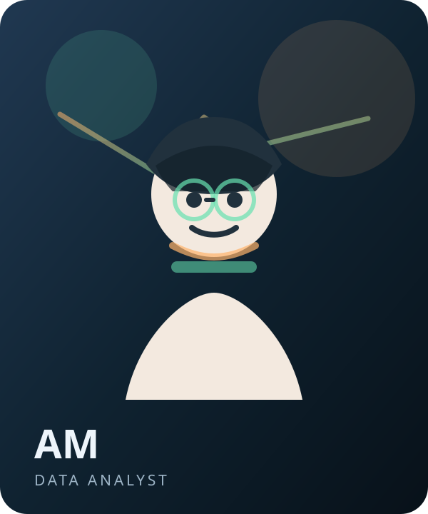
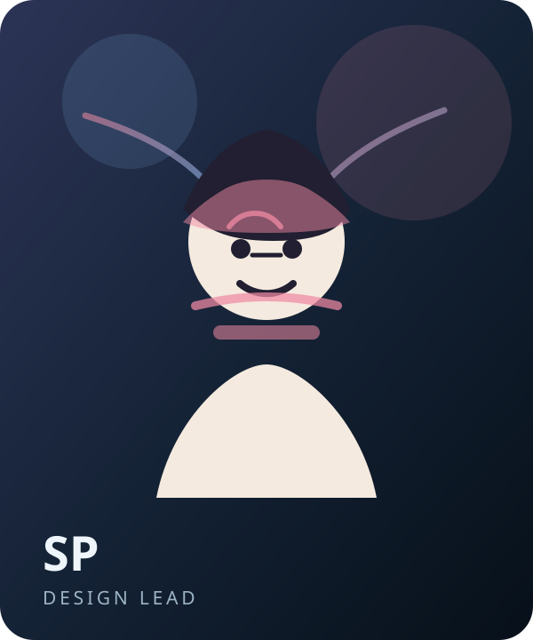

Site Editor / Project Lead
Brian Z.
Brian shaped the editorial voice, curated the map content, and coordinated the final build. His research interests focus on human-centered security, campus privacy, and accessible digital storytelling.
About the project
This fictional editorial team shaped the site as a campus safety atlas, blending field research, spatial data, and visual storytelling into one cohesive project.
This site presents a fictional campus safety project as an editorial atlas: a space to map, question, and visualize how everyday locations collect people, systems, and data. The goal is to make the project feel readable, thoughtful, and grounded in the work of a small creative team.
Each profile includes a portrait, role in production, and a short professional biography.
Site Editor / Project Lead
Brian shaped the editorial voice, curated the map content, and coordinated the final build. His research interests focus on human-centered security, campus privacy, and accessible digital storytelling.

Data Analyst / Mapping Researcher
Alex collected and cleaned spatial data, validated coordinates, and built the marker dataset. He specializes in mapping workflows, reproducible pipelines, and clear documentation for collaborative projects.

Interaction Designer / Accessibility Lead
Samira designed the site interactions and accessibility features, making sure the map, cards, and profile content stayed keyboard-friendly, readable, and easy to scan on smaller screens.
Frontend Developer / QA Lead
Jordan implemented the interactive layout, marker styling, and responsive behavior. They also coordinated cross-browser testing, performance checks, and polish passes before launch.
Editorial Producer / Archive Curator
Mina organized the history materials, wrote the launch copy, and assembled the visual archive for the about page. Her background blends magazine production, multimedia editing, and exhibit-style storytelling.
A fictional production history showing how the project evolved from concept to final release.
The project began with campus interviews, field notes, and route sketches. The team pinned the first safety concepts to a shared planning wall.
Alex ran the first serious data pass, cleaning locations, validating descriptions, and creating a stable marker set for the map prototype.
The first interactive build was tested with a small review group. Feedback led to simpler popups, better contrast, and clearer legend labels.
Mina organized launch notes, saved screenshots, and created the visual archive that now shapes this about page.
The project was finalized for class presentation with one last editorial polish, responsive cleanup, and a refined history page for the site.
This fictional project was created for a class assignment. Map layers on other pages use CARTO and OpenStreetMap data where noted; the text, portraits, and history artifacts on this page are original to the project team.